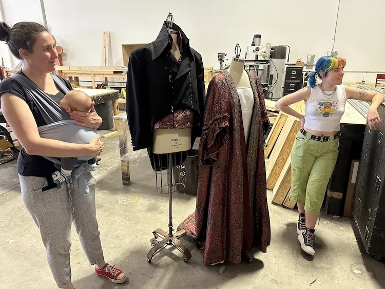
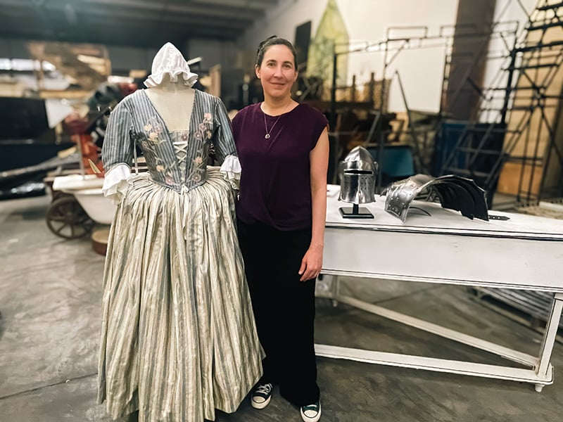

Costume Designer
↓Jen J Madison designs costumes for theatre and opera, with a focus on storytelling. Her work spans historical plays both period-faithful and reimagined, new plays in development, and large-scale operas, including Shakespeare in the Park productions with Shakespeare Dallas, Br'er Cotton with Kitchen Dog Theater, and Lucia di Lammermoor at Opera Orlando. She holds an MFA in Costume Design from the University of Texas at Austin. Jen is based in Athens, Georgia, and is always looking for teams to make thoughtful, exciting work with.
Costumes have a knack for detail.
Succeeds on every level. It’s beautiful to look at.

Combining rented pieces with new builds to create the 70-odd looks required.

We spent almost a week just distressing and painting to get them looking like they had been worn on the edge of civilization for years.
Costumes stay successfully within the limits of the black-and-white template, dressing Margo in some especially dramatic and glamorous silks and velvets.
Period-appropriate 1940s tweed suits, argyle sweaters and pencil skirts, in what appear to be more than 50 shades of gray.
Jen J. Madison’s costumes do, though. The orphans put the ‘rag’ in ‘ragamuffin.’
Costumes are eye-catching and comic in themselves, from the Jackie K outfits to the 60’s bathing suits to the gaudy beach shirts of the surfer guys.